Walnut Mancala

This project went through an evolution over a few months. The inspiration came from a family member who came home excited, having learned to play mancala at school.
Mancala 1.0
An hour with a 2×4 and trim router led to the first prototype. Pretty ugly, but it served the purpose for a bunch of fun mancala sessions.
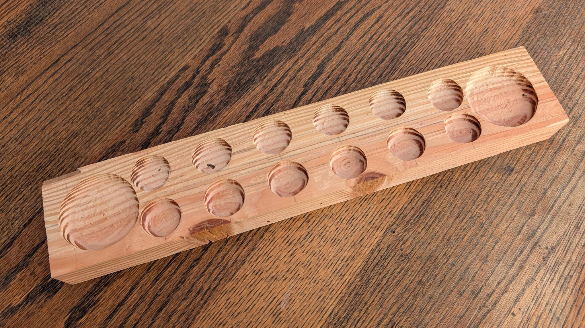
A few months later I got my hands on a chunk of walnut, measuring 16″ × 4.5″ × 6″. Mancala 2.0 planning begins in earnest. After some rough planning, the walnut was cut into two 16″ × 4.5″ × 3″ pieces.
The piece was planed smooth to remove the table saw marks and square up all the edges.
Mancala 1.5
Using the final dimensions of the walnut piece, it's time to prototype a couple techniques I planned to use to shape the walnut final mancala board. Prototyping started on a matching piece of pine.
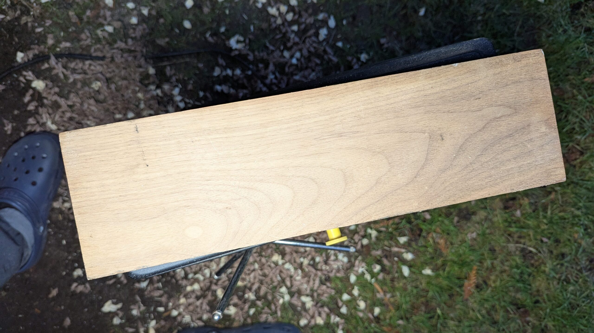
Testing for forstner bit wood removal, and straight router bit radius choice, as well as router depths. Also, router jig development and tweaking was tested on the pine board before applying it to the walnut piece.
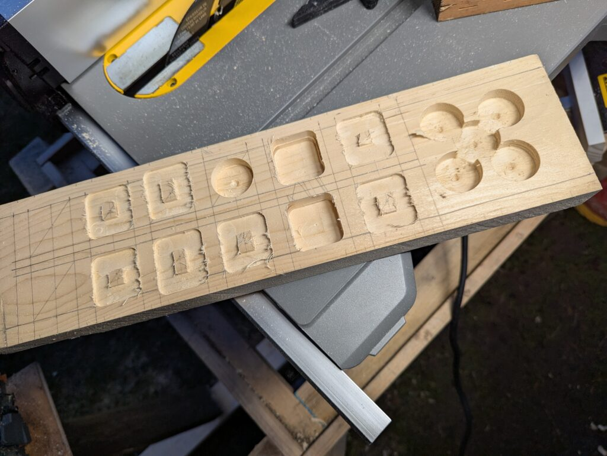
Cove and round-over router bit selection and testing on the flip side once the jig and drilling techniques were dialed in and documented.
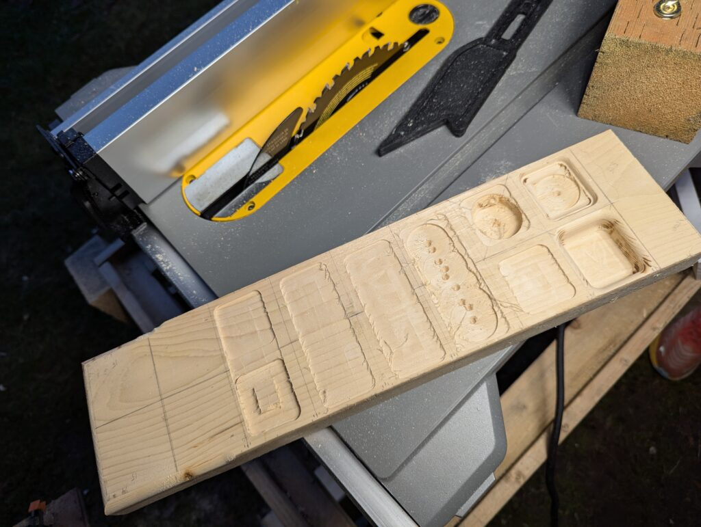
Mancala 2.0 — show time
With the tools and techniques dialed in, the pockets, borders and drill center marks were penciled onto the walnut.
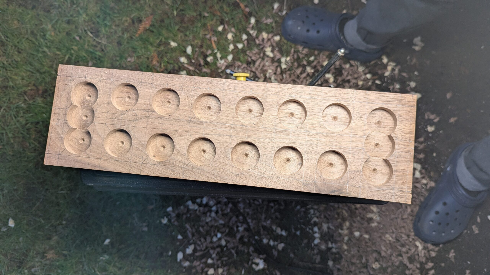
Into the routing jig it goes for shaping the mancala cups. As you can see above, a squircle shape was chosen, which is easily achieved with a squared jig shape and the right diameter bits. A 1/2″ diameter straight router bit was used to squircle out the round forstner holes.
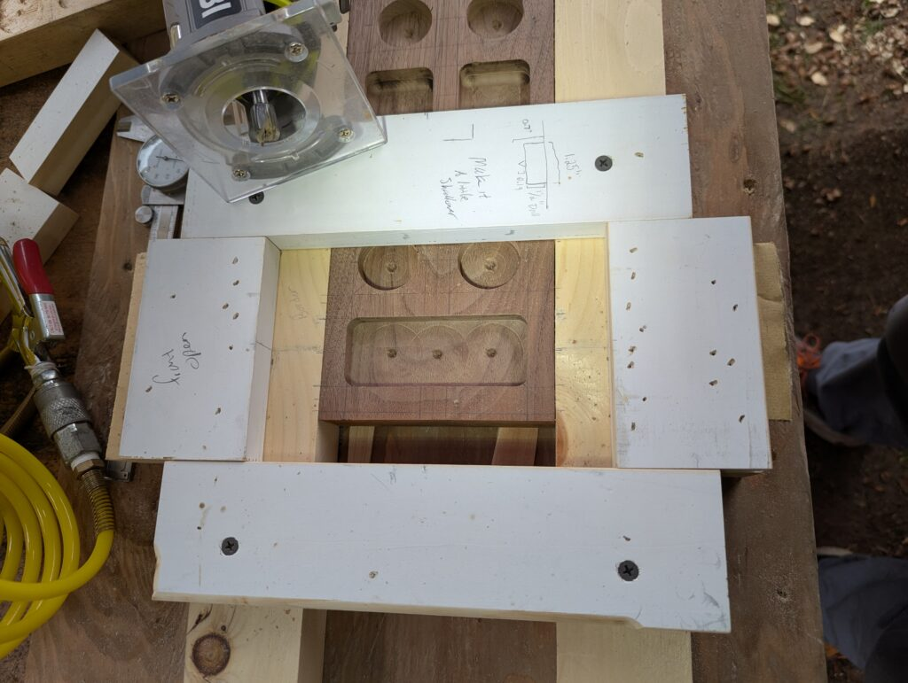
One jig with one spacer allows for long cups and small cups to be shaped quickly and precisely. Note the forstner center tip is still present in the bottom of the cups at this stage.
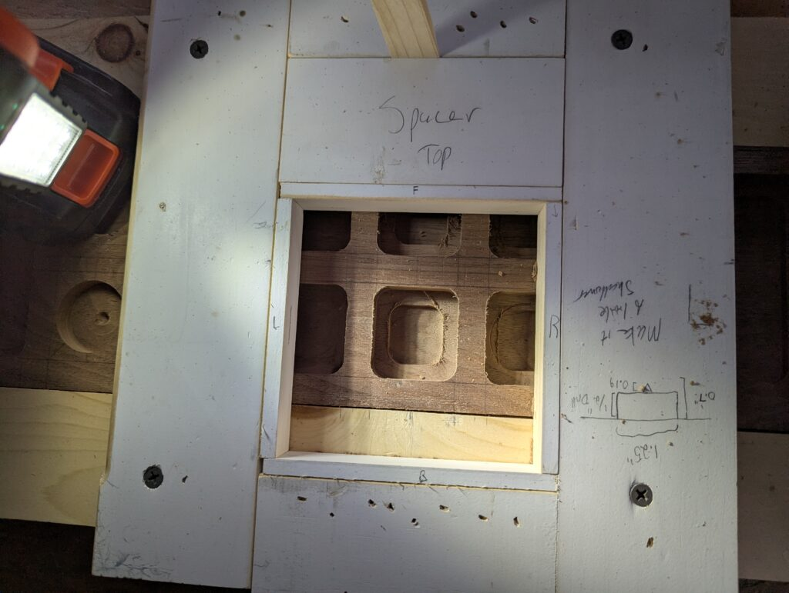
A nested, smaller cup gets routed out to remove wood in prep for the cove box bit to round the bottom of the cups. To precisely make this smaller cup, another set of spacers are used.
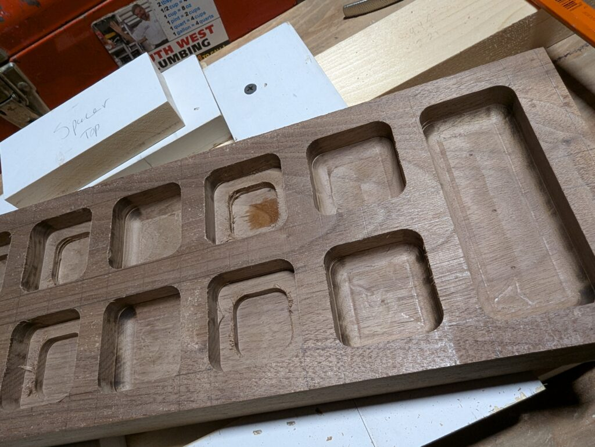
Some router burn is present at this stage due to the wood type, sawdust presence, the bit quality, routing depth and speed of movement. Ultimately sharpening the bits, taking shallow paths, removing sawdust often and moving the bit as fast as safely possible minimized the burn marks, but they will need cleaning up in later stages.
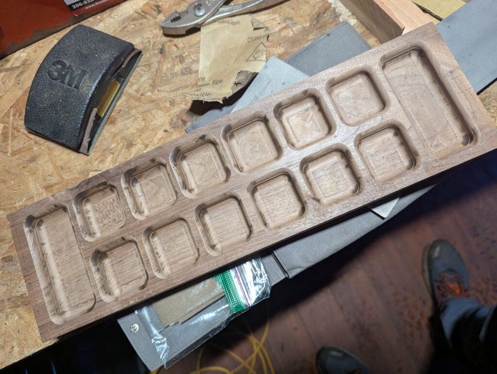
The 1/2″ cove box bit rounded the bottom of the cups nicely, but jig placement and depth control left artifacts in the wood that will need further manual finessing and finishing.
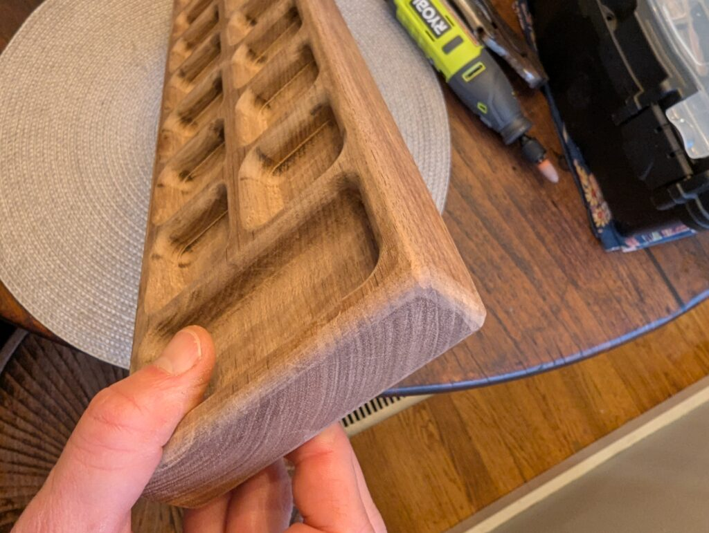
The same jig was used with a 1/2″ round-over bit to round the top edges of the cups nicely, but again router burn is prevalent.
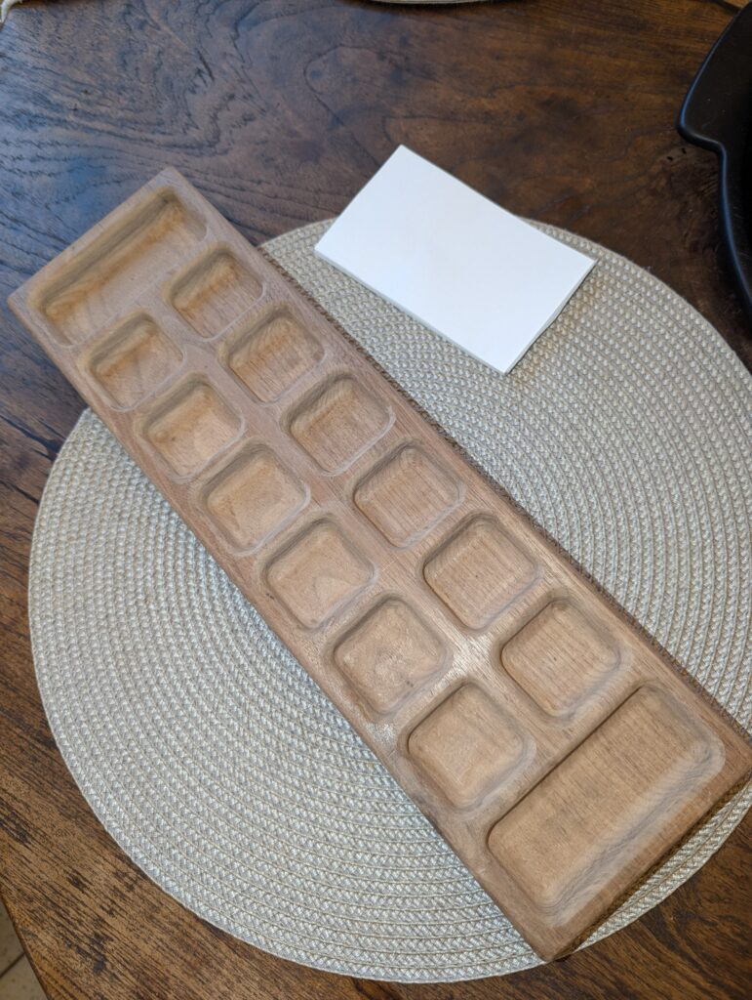
A 1/2″ round-over was applied to all the external edges of the walnut. Rough sanding to remove obvious blemishes and ensure consistency across the board.
Next up various techniques and tools were tested out for removing the router burn marks. The best solution provided a balance of speed, accuracy and minimal material removal — a small, slow, battery-powered Dremel with a 1/4″ sandpaper drum mandrel tip.
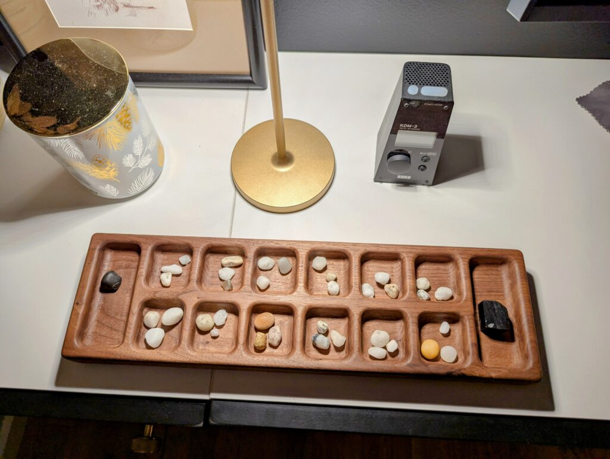
The Dremel took a while to carefully remove all the router burn and bit marks, but resulted in nice clear grain on the board. After some sanding down to 300 grit, raising the grain, and light re-sanding, it is ready for finishing.
The board was finished with Osmo TopOil — my preferred food-safe finish that brings out the grain and is a bit more durable than simple mineral oil or linseed oil.